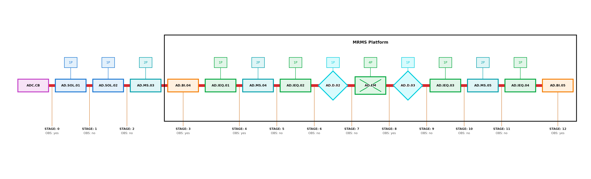
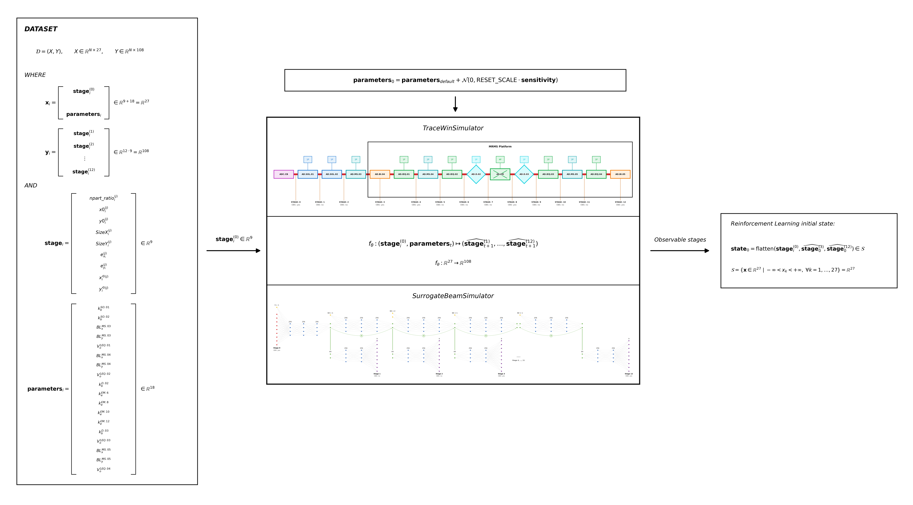
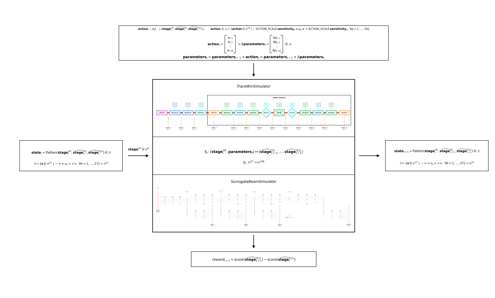

Beam optimization environments: design choices and formulas¶
This notebook documents the actual configuration shared by TraceWinEnv and SurrogateEnv: observations, sensitivity, scale calibration, reset noise, actions, trajectory limits, score, reward, and episode termination. All numerical values are read from the current Python configuration.
This notebook is read-only: it does not run TraceWin and does not change the environment configuration.
from pathlib import Path
import sys
import matplotlib.pyplot as plt
import numpy as np
from IPython.display import Markdown, display
WORKING_DIR = Path.cwd().resolve()
if (WORKING_DIR / 'beam_optimization').is_dir():
REPO_ROOT = WORKING_DIR
else:
PROJECT_ROOT = WORKING_DIR
while PROJECT_ROOT.name != 'beam_optimization' and PROJECT_ROOT.parent != PROJECT_ROOT:
PROJECT_ROOT = PROJECT_ROOT.parent
REPO_ROOT = PROJECT_ROOT.parent
if str(REPO_ROOT) not in sys.path:
sys.path.insert(0, str(REPO_ROOT))
from beam_optimization.config.adige import (
ACTION_SCALE, ALL_PARTICLES_LOST_NPART_RATIO, BAYESIAN_SCALE, BEAM_STATE_DIM, BEAM_STATE_FEATURES,
DATASET_SCALE, ERROR_SCORE, TERMINAL_FAILURE_REWARD,
MAX_TERMINAL_RESET_ATTEMPTS, MAX_STEPS, N_PARAMS, N_STAGES, OBSERVATION_STAGE_MASK, PARAMETERS,
REWARD_SCORE_SCALE, RL_MIN_NPART_RATIO,
TEST_RESET_SCALE,
TRAIN_RESET_SCALE,
SCORE_REFERENCES, SCORE_WEIGHTS, STAGE_MARKERS, action_bounds,
dataset_std_vec, observation_dim, observation_stage_indices,
observation_stage_labels, reset_std_vec, sensitivity_vec,
)
def fmt(value):
return f'{float(value):.6g}'
def fmt_bound(value):
return 'unbounded' if value is None else fmt(value)
def table(headers, rows):
lines = ['| ' + ' | '.join(headers) + ' |', '| ' + ' | '.join(['---'] * len(headers)) + ' |']
lines.extend('| ' + ' | '.join(str(cell) for cell in row) + ' |' for row in rows)
return '\n'.join(lines)
simulation_intro_parts = [
'## 0. What a simulation is, and the two backends that run it',
(
'Neither `TraceWinEnv` nor `SurrogateEnv` computes a beam response directly: at every '
'`reset()` and every `step()`, the environment hands the current physical machine '
'parameters to a **simulator**, and everything downstream — the observation, the score, '
'whether the episode terminates — is derived entirely from what that simulator returns. '
'Both backends implement the exact same contract, '
'`BeamSimulator.simulate(params) -> BeamSimulationResult` ([env/simulation.py](../env/simulation.py)):'
),
(
f'- **Input** `params`: a `{{key: value}}` dict with all `N_PARAMS = {N_PARAMS}` physical '
'machine values (the ADIGE parameters listed in `PARAMETERS`, e.g. `ele[2][5]`) — exactly '
'the parameter set the policy has been adjusting so far, already clipped to hardware bounds.\n'
f'- **Output** a `BeamSimulationResult`: `beam_states`, an array describing the beam at every '
f'one of the `N_STAGES = {N_STAGES}` lattice stages (the input beam plus 12 output stages, '
f'`BEAM_STATE_DIM = {BEAM_STATE_DIM}` features each — `npart_ratio`, centroid, size, '
'emittance, angle); `score_val`, the scalar score of the final stage; a `success` flag; '
'and diagnostic metadata (physics-failure reason, timing, source).'
),
(
'This shared contract is exactly why `TraceWinEnv` and `SurrogateEnv` can reuse all of their '
'reset/step logic from one `BaseBeamEnv` (see sections 2-4 below): they only differ in which '
'simulator their `_build_simulator()` returns. **Two interchangeable implementations exist**, '
'doing the same thing with different characteristics:'
),
table(
['', '`TraceWinSimulator`', '`SurrogateBeamSimulator`'],
[
['What it runs', 'The real TraceWin physics code', 'A trained `ModularMLP` neural-network ensemble'],
['Accuracy', 'Ground truth', 'An approximation learned from a dataset of TraceWin runs'],
['Speed', '~30 s per call', '~1 ms per call'],
['Used by', '`TraceWinEnv` — validation and real-environment fine-tuning', '`SurrogateEnv` — large-scale training and fast evaluation'],
],
),
'**`TraceWinSimulator`** runs the real TraceWin physics code on the MRMS platform, over SSH:',
'',
'**`SurrogateBeamSimulator`** runs a `ModularMLP`: one stage-wise sub-network per lattice section, chained along the beam line:',
'',
(
'Large-scale policy training (hundreds of thousands of steps) is normally performed against '
'the fast surrogate. TraceWin is used for offline calibration, dataset generation, final '
'validation and bounded real-environment phases such as iterative Sim-to-Real fine-tuning. '
'The same Gym interface allows a policy to move between the two backends without changing '
'its observation or action contract. Section 5 covers the remaining backend-specific differences (failure '
'detection, reset context) and the render-only diagnostics.'
),
]
display(Markdown('\n\n'.join(simulation_intro_parts)))
0. What a simulation is, and the two backends that run it¶
Neither TraceWinEnv nor SurrogateEnv computes a beam response directly: at every reset() and every step(), the environment hands the current physical machine parameters to a simulator, and everything downstream — the observation, the score, whether the episode terminates — is derived entirely from what that simulator returns. Both backends implement the exact same contract, BeamSimulator.simulate(params) -> BeamSimulationResult (env/simulation.py):
- Input
params: a{key: value}dict with allN_PARAMS = 18physical machine values (the ADIGE parameters listed inPARAMETERS, e.g.ele[2][5]) — exactly the parameter set the policy has been adjusting so far, already clipped to hardware bounds. - Output a
BeamSimulationResult:beam_states, an array describing the beam at every one of theN_STAGES = 13lattice stages (the input beam plus 12 output stages,BEAM_STATE_DIM = 9features each —npart_ratio, centroid, size, emittance, angle);score_val, the scalar score of the final stage; asuccessflag; and diagnostic metadata (physics-failure reason, timing, source).
This shared contract is exactly why TraceWinEnv and SurrogateEnv can reuse all of their reset/step logic from one BaseBeamEnv (see sections 2-4 below): they only differ in which simulator their _build_simulator() returns. Two interchangeable implementations exist, doing the same thing with different characteristics:
TraceWinSimulator |
SurrogateBeamSimulator |
|
|---|---|---|
| What it runs | The real TraceWin physics code | A trained ModularMLP neural-network ensemble |
| Accuracy | Ground truth | An approximation learned from a dataset of TraceWin runs |
| Speed | ~30 s per call | ~1 ms per call |
| Used by | TraceWinEnv — validation and real-environment fine-tuning |
SurrogateEnv — large-scale training and fast evaluation |
TraceWinSimulator runs the real TraceWin physics code on the MRMS platform, over SSH:

SurrogateBeamSimulator runs a ModularMLP: one stage-wise sub-network per lattice section, chained along the beam line:

Large-scale policy training (hundreds of thousands of steps) is normally performed against the fast surrogate. TraceWin is used for offline calibration, dataset generation, final validation and bounded real-environment phases such as iterative Sim-to-Real fine-tuning. The same Gym interface allows a policy to move between the two backends without changing its observation or action contract. Section 5 covers the remaining backend-specific differences (failure detection, reset context) and the render-only diagnostics.
1. Observation space¶
1.1 The Gymnasium space contract¶
A Gymnasium environment must define two complementary Space objects:
observation_space: what the agent can see;action_space: what the agent is allowed to do.
A Space provides, among other operations, contains(x) to test whether a value belongs to the declared space and sample() to generate a valid sample. Gymnasium offers several space types; this environment uses continuous Box spaces because both beam features and machine corrections are real-valued vectors.
1.2 What the policy observes¶
TraceWinEnv and SurrogateEnv expose the same observation: only the selected beam states produced by their respective simulator backends. Each visible longitudinal stage contributes the nine configured beam features. Machine parameters, previous action, reward, and score are not appended.
1.3 Observation Box: construction and dimension¶
If $b_1,\ldots,b_m$ are the stages enabled by OBSERVATION_STAGE_MASK, their beam-state rows are concatenated in beam-line order and flattened:
$$o_t = \operatorname{flatten}\left(B_t[b_1],\ldots,B_t[b_m]\right),$$ $$\dim(o_t)=m\times BEAM\_STATE\_DIM.$$
The declared Gymnasium space is
$$\mathcal{O}=\operatorname{Box}\left(low=-\infty,high=+\infty,shape=(m\times BEAM\_STATE\_DIM,),dtype=float32\right).$$
The resulting fixed-length float32 vector is the input to the policy. The dynamic tables below show the exact active stages, feature order, observation dimension, and action dimension from the current configuration.
1.4 Design reasoning and consequences¶
Using the same observation definition for both backends allows one policy interface to operate with either TraceWin or the surrogate. The input stage describes the incoming beam, the visible intermediate stage provides longitudinal context, and the final stage describes beam quality.
The policy therefore chooses corrections from beam information alone. During particle loss it receives the available partial stages and zero-filled missing stages, but not the current machine settings. Score remains available separately as info["score"], while reward supplies the learning signal.
visible_indices = observation_stage_indices()
visible_labels = observation_stage_labels()
action_low, action_high = action_bounds()
stage_rows = []
for index, (marker, visible) in enumerate(zip(STAGE_MARKERS, OBSERVATION_STAGE_MASK)):
label = 'beam0' if index == 0 else f'marker_{marker}'
stage_rows.append([index, marker, f'`{label}`', 'yes' if visible else 'no'])
meanings = {
'npart_ratio': 'surviving particle fraction',
'x0': 'horizontal centroid [mm]', 'y0': 'vertical centroid [mm]',
'SizeX': 'horizontal RMS size [mm]', 'SizeY': 'vertical RMS size [mm]',
'ex': 'horizontal geometric RMS emittance [mm.mrad]',
'ey': 'vertical geometric RMS emittance [mm.mrad]',
"x'0": 'horizontal angular centroid [mrad]',
"y'0": 'vertical angular centroid [mrad]',
}
feature_rows = [[i, f'`{name}`', meanings[name], 'yes'] for i, name in enumerate(BEAM_STATE_FEATURES)]
interface_rows = [[
name, f'{len(visible_indices)} × {BEAM_STATE_DIM} = {observation_dim()}',
str((observation_dim(),)), str(action_low.shape), '`info["score"]`',
] for name in ('TraceWinEnv', 'SurrogateEnv')]
display(Markdown('\n\n'.join([
table(['Environment', 'Observation formula', 'Obs shape', 'Action shape', 'Score output'], interface_rows),
'### 1.5 Beam stages and visibility',
table(['Stage index', 'TraceWin marker', 'Label', 'Visible to the agent'], stage_rows),
f'Current observation: **{", ".join(visible_labels)}**, therefore **{observation_dim()} float32 beam-feature values**.',
'### 1.6 Features in each visible stage',
table(['Index', 'Feature', 'Meaning', 'Used by score'], feature_rows),
])))
| Environment | Observation formula | Obs shape | Action shape | Score output |
|---|---|---|---|---|
| TraceWinEnv | 3 × 9 = 27 | (27,) | (18,) | info["score"] |
| SurrogateEnv | 3 × 9 = 27 | (27,) | (18,) | info["score"] |
1.5 Beam stages and visibility¶
| Stage index | TraceWin marker | Label | Visible to the agent |
|---|---|---|---|
| 0 | 0 | beam0 |
yes |
| 1 | 2 | marker_2 |
no |
| 2 | 29 | marker_29 |
no |
| 3 | 108 | marker_108 |
yes |
| 4 | 151 | marker_151 |
no |
| 5 | 162 | marker_162 |
no |
| 6 | 195 | marker_195 |
no |
| 7 | 197 | marker_197 |
no |
| 8 | 203 | marker_203 |
no |
| 9 | 205 | marker_205 |
no |
| 10 | 225 | marker_225 |
no |
| 11 | 261 | marker_261 |
no |
| 12 | 332 | marker_332 |
yes |
Current observation: beam0, marker_108, marker_332, therefore 27 float32 beam-feature values.
1.6 Features in each visible stage¶
| Index | Feature | Meaning | Used by score |
|---|---|---|---|
| 0 | npart_ratio |
surviving particle fraction | yes |
| 1 | x0 |
horizontal centroid [mm] | yes |
| 2 | y0 |
vertical centroid [mm] | yes |
| 3 | SizeX |
horizontal RMS size [mm] | yes |
| 4 | SizeY |
vertical RMS size [mm] | yes |
| 5 | ex |
horizontal geometric RMS emittance [mm.mrad] | yes |
| 6 | ey |
vertical geometric RMS emittance [mm.mrad] | yes |
| 7 | x'0 |
horizontal angular centroid [mrad] | yes |
| 8 | y'0 |
vertical angular centroid [mrad] | yes |
2. Action space and sensitivity-based bounds¶
The observation space specifies what the policy receives. The action space instead specifies what the policy may change.
2.1 Defining what the agent is allowed to do¶
Every controlled TraceWin parameter is continuous, so a Discrete space would be inappropriate. The environment therefore needs a continuous Gymnasium Box with one component for each parameter:
$$\mathcal{A}=\operatorname{Box}\left(low=\mathbf{a}^{min},high=\mathbf{a}^{max},dtype=float32\right),\qquad shape(\mathcal{A})=(N\_PARAMS,).$$
Currently N_PARAMS = 18, and component $p$ is the requested physical delta for parameter $p$ in PARAMETERS order. action_space.contains(a) checks the vector shape, dtype compatibility, and bounds. action_space.sample() draws a random valid vector from the bounded box; this is useful for checks or explicitly random exploration, but it is not how a trained policy normally chooses its action.
Declaring Box and its shape is not sufficient: the vectors $\mathbf{a}^{min}$ and $\mathbf{a}^{max}$ must also be physically meaningful. A single absolute limit cannot be shared directly because the 18 parameters have different units and magnitudes. This motivates the sensitivity calibration below.
2.2 Why sensitivity is introduced¶
The 18 controlled parameters have different units and numerical magnitudes, so one common absolute action bound would not represent a comparable physical effect. A parameter-specific calibration is needed before the action bounds can be defined.
For parameter $p$, sensitivity_p is the physical interval estimated to produce an absolute score change of approximately one point near its calibration point:
$$s_p \approx \frac{\Delta p}{|\Delta score|}.$$
Sensitivity is a local calibration unit. It is not a hardware limit and does not guarantee linear behavior far from the calibration point. Multiplying $s_p$ by one shared dimensionless scale produces a different physical width for each parameter while targeting a comparable local effect.
2.3 From sensitivity to physical widths¶
$$\sigma_{dataset,p}=DATASET\_SCALE\,s_p$$ $$\sigma_{train\ reset,p}=TRAIN\_RESET\_SCALE\,s_p$$ $$\sigma_{test\ reset,p}=TEST\_RESET\_SCALE\,s_p=DATASET\_SCALE\,s_p$$ $$a_{max,p}=ACTION\_SCALE\,s_p$$ $$trajectory_{max,p}=MAX\_STEPS\,a_{max,p}.$$
DATASET_SCALE and TRAIN_RESET_SCALE are independently calibrated, each via its own run of exploration_scale_calculation at a different --target-success-rate: DATASET_SCALE at 80% (deliberately looser, so ~20% of the dataset used to train the surrogate also covers failure/near-boundary behavior), TRAIN_RESET_SCALE at 90% (training resets should mostly land in valid, recoverable states). There is no formula deriving one from the other any more. ACTION_SCALE = DATASET_SCALE / (MAX_STEPS / 2) is the only derived quantity, and it is written in terms of MAX_STEPS on purpose: a full directed trajectory therefore covers exactly ±2·DATASET_SCALE regardless of MAX_STEPS (currently 20 steps), i.e. it always spans the dataset-generation gaussian, not the (independently calibrated) training-reset one. Evaluation uses TEST_RESET_SCALE = DATASET_SCALE. Only after these sensitivity-based widths are calculated are hardware bounds applied as separate clipping limits.
sensitivities = sensitivity_vec()
dataset_std = dataset_std_vec()
train_reset_std = reset_std_vec(TRAIN_RESET_SCALE)
test_reset_std = reset_std_vec(TEST_RESET_SCALE)
step_max = action_high.astype(np.float64)
trajectory_max = MAX_STEPS * step_max
trajectory_scale = MAX_STEPS * ACTION_SCALE
scale_rows = [
['Dataset Gaussian width', '`DATASET_SCALE`', 'exploration_scale_calculation --target-success-rate 0.80', fmt(DATASET_SCALE), '`dataset_std_p = DATASET_SCALE × sensitivity_p`; ~20% of the dataset is deliberately failure/near-boundary'],
['Bayesian half-width', '`BAYESIAN_SCALE`', '`BAYESIAN_SCALE = DATASET_SCALE`', fmt(BAYESIAN_SCALE), 'default ± Bayesian interval'],
['Training reset Gaussian width', '`TRAIN_RESET_SCALE`', 'exploration_scale_calculation --target-success-rate 0.90', fmt(TRAIN_RESET_SCALE), '`train_reset_std_p = TRAIN_RESET_SCALE × sensitivity_p`'],
['Test reset Gaussian width', '`TEST_RESET_SCALE`', '`TEST_RESET_SCALE = DATASET_SCALE`', fmt(TEST_RESET_SCALE), '`test_reset_std_p = DATASET_SCALE × sensitivity_p`'],
['Per-step action half-width', '`ACTION_SCALE`', '`DATASET_SCALE / (MAX_STEPS / 2)`', fmt(ACTION_SCALE), '`step_max_p = ACTION_SCALE × sensitivity_p`'],
['Episode horizon', '`MAX_STEPS`', 'configured episode length', str(MAX_STEPS), 'maximum number of actions'],
]
parameter_rows = []
for i, parameter in enumerate(PARAMETERS):
parameter_rows.append([
i, f'`{parameter.name}`', fmt(parameter.default), fmt(sensitivities[i]),
fmt_bound(parameter.hw_min), fmt_bound(parameter.hw_max),
fmt(dataset_std[i]), fmt(train_reset_std[i]), fmt(test_reset_std[i]),
f'±{fmt(step_max[i])}', f'±{fmt(trajectory_max[i])}',
])
parts = [
'### 2.4 Current global scales',
('`DATASET_SCALE` and `TRAIN_RESET_SCALE` are independently calibrated (different `--target-success-rate`, '
'no formula relates them); `ACTION_SCALE` is the only quantity derived from another '
'(`DATASET_SCALE / (MAX_STEPS / 2)`) — written this way so the trajectory budget below is always exactly `2×DATASET_SCALE`, for any `MAX_STEPS`.'),
table(['Quantity', 'Symbol', 'Source', 'Value', 'Physical meaning'], scale_rows),
(f'A full `MAX_STEPS`-step trajectory of maximum-magnitude, same-direction actions covers '
f'`MAX_STEPS × ACTION_SCALE = {fmt(trajectory_scale)}` × sensitivity — exactly `2 × DATASET_SCALE` — '
'i.e. a policy that wants to can move from one side of the dataset-generation gaussian to the other '
'(not the narrower training-reset one).'),
'### 2.5 Per-parameter physical intervals',
'All intervals come from the sensitivity in the same row. Training and test reset columns are Gaussian standard deviations. `Trajectory max` is action-only; hardware clipping may reduce the reachable displacement.',
table(
['#', 'Parameter', 'Default', 'Sensitivity', 'HW min', 'HW max', 'Dataset std', 'Training reset std', 'Test reset std', 'Action/step', 'Trajectory max'],
parameter_rows,
),
]
display(Markdown('\n\n'.join(parts)))
combined_scale = TRAIN_RESET_SCALE + trajectory_scale
test_combined_scale = TEST_RESET_SCALE + trajectory_scale
# Ratios relative to DATASET_SCALE, kept for the printed summary below.
# trajectory_scale = 2 x DATASET_SCALE exactly, by construction
# (ACTION_SCALE = DATASET_SCALE / (MAX_STEPS / 2), so MAX_STEPS cancels out);
# the other ratios depend on wherever TRAIN_RESET_SCALE currently sits
# (not fixed by a formula).
reset_ratio = TRAIN_RESET_SCALE / DATASET_SCALE
test_reset_ratio = TEST_RESET_SCALE / DATASET_SCALE
trajectory_ratio = trajectory_scale / DATASET_SCALE
combined_ratio = combined_scale / DATASET_SCALE
test_combined_ratio = test_combined_scale / DATASET_SCALE
labels = [
r'Dataset Gaussian width: $\sigma_{\mathrm{dataset},p}$',
r'Training reset: $\sigma_{\mathrm{train},p}$',
r'Test reset: $\sigma_{\mathrm{test},p}$',
'Full trajectory',
'Training reset + full trajectory',
'Test reset + full trajectory',
]
values = [
DATASET_SCALE,
TRAIN_RESET_SCALE,
TEST_RESET_SCALE,
trajectory_scale,
combined_scale,
test_combined_scale,
]
formula_labels = [
r'$\mathrm{DATASET\_SCALE} \cdot s_p$',
r'$\mathrm{TRAIN\_RESET\_SCALE} \cdot s_p$',
r'$\mathrm{TEST\_RESET\_SCALE} \cdot s_p = \mathrm{DATASET\_SCALE} \cdot s_p$',
r'$\mathrm{MAX\_STEPS} \cdot \mathrm{ACTION\_SCALE} \cdot s_p = 2 \cdot \mathrm{DATASET\_SCALE} \cdot s_p$',
r'$\mathrm{TRAIN\_RESET\_SCALE} \cdot s_p + \mathrm{MAX\_STEPS} \cdot \mathrm{ACTION\_SCALE} \cdot s_p$',
r'$\mathrm{TEST\_RESET\_SCALE} \cdot s_p + \mathrm{MAX\_STEPS} \cdot \mathrm{ACTION\_SCALE} \cdot s_p$',
]
# Saturated, high-contrast palette (deliberately not pastel).
colors = ['#1565C0', '#E65100', '#7B1FA2', '#039BE5', '#16A34A', '#C2185B']
fig, ax = plt.subplots(figsize=(14, 7.0), facecolor='white')
ax.set_facecolor('white')
bars = ax.barh(
labels, values, height=0.62, color=colors,
edgecolor='#172033', linewidth=0.8, zorder=3,
)
for bar, value, formula in zip(bars, values, formula_labels):
y = bar.get_y() + bar.get_height() / 2
ax.text(
value - 0.035, y, fmt(value), ha='right', va='center',
color='white', fontsize=10, fontweight='bold', zorder=4,
)
ax.annotate(
formula, xy=(value, y), xytext=(10, 0),
textcoords='offset points', ha='left', va='center',
fontsize=9.5, color='#172033',
bbox=dict(facecolor='white', edgecolor='none', alpha=0.92, pad=1.5),
zorder=4,
)
xmax = max(values) * 2.15
ax.set_xlim(0, xmax)
# Reference lines at whole multiples of DATASET_SCALE, starting from the
# dataset bar itself, so every other bar's ratio to it is read visually
# instead of printed on the labels.
n_multiples = int(np.floor(xmax / DATASET_SCALE))
for k in range(1, n_multiples + 1):
ax.axvline(
k * DATASET_SCALE, color='#7B8494', linestyle=(0, (4, 3)),
linewidth=0.9, alpha=0.72, zorder=1,
)
from matplotlib.ticker import MultipleLocator
ax_top = ax.secondary_xaxis(
'top', functions=(lambda x: x / DATASET_SCALE, lambda x: x * DATASET_SCALE)
)
ax_top.set_xlabel('× DATASET_SCALE', fontsize=10, color='#172033', labelpad=8)
ax_top.xaxis.set_major_locator(MultipleLocator(1))
ax_top.tick_params(axis='x', colors='#172033', labelsize=10, length=4)
ax_top.spines['top'].set_color('#172033')
ax.set_xlabel(
'Dimensionless displacement (multiples of parameter sensitivity)',
fontsize=10.5, color='#172033', labelpad=4,
)
ax.tick_params(axis='x', bottom=False, labelbottom=False)
ax.tick_params(axis='y', colors='#172033', labelsize=10.5, length=0, pad=8)
ax.grid(False)
for side in ('left', 'right', 'bottom'):
ax.spines[side].set_visible(False)
ax.invert_yaxis()
fig.tight_layout(pad=1.2)
plt.show()
print(
'Current ratios relative to DATASET_SCALE '
f'(DATASET_SCALE={fmt(DATASET_SCALE)}, TRAIN_RESET_SCALE={fmt(TRAIN_RESET_SCALE)}, MAX_STEPS={MAX_STEPS}):\n'
f' training reset = {reset_ratio:.4f} x dataset '
f'({"exactly half" if abs(reset_ratio - 0.5) < 1e-9 else "NOT half — see actual ratio above"})\n'
f' test reset = {test_reset_ratio:.4f} x dataset '
f'(equal to dataset width by configuration)\n'
f' full trajectory = {trajectory_ratio:.4f} x dataset '
f'(exactly double, by construction: ACTION_SCALE = DATASET_SCALE / (MAX_STEPS / 2), independent of MAX_STEPS)\n'
f' train reset + trajectory = {combined_ratio:.4f} x dataset '
f'({"exactly triple" if abs(combined_ratio - 3.0) < 1e-9 else "NOT exactly triple — see actual ratio above"})\n'
f' test reset + trajectory = {test_combined_ratio:.4f} x dataset '
f'({"exactly triple" if abs(test_combined_ratio - 3.0) < 1e-9 else "NOT exactly triple — see actual ratio above"})'
)
2.4 Current global scales¶
DATASET_SCALE and TRAIN_RESET_SCALE are independently calibrated (different --target-success-rate, no formula relates them); ACTION_SCALE is the only quantity derived from another (DATASET_SCALE / (MAX_STEPS / 2)) — written this way so the trajectory budget below is always exactly 2×DATASET_SCALE, for any MAX_STEPS.
| Quantity | Symbol | Source | Value | Physical meaning |
|---|---|---|---|---|
| Dataset Gaussian width | DATASET_SCALE |
exploration_scale_calculation --target-success-rate 0.80 | 0.6 | dataset_std_p = DATASET_SCALE × sensitivity_p; ~20% of the dataset is deliberately failure/near-boundary |
| Bayesian half-width | BAYESIAN_SCALE |
BAYESIAN_SCALE = DATASET_SCALE |
0.6 | default ± Bayesian interval |
| Training reset Gaussian width | TRAIN_RESET_SCALE |
exploration_scale_calculation --target-success-rate 0.90 | 0.45 | train_reset_std_p = TRAIN_RESET_SCALE × sensitivity_p |
| Test reset Gaussian width | TEST_RESET_SCALE |
TEST_RESET_SCALE = DATASET_SCALE |
0.6 | test_reset_std_p = DATASET_SCALE × sensitivity_p |
| Per-step action half-width | ACTION_SCALE |
DATASET_SCALE / (MAX_STEPS / 2) |
0.06 | step_max_p = ACTION_SCALE × sensitivity_p |
| Episode horizon | MAX_STEPS |
configured episode length | 20 | maximum number of actions |
A full MAX_STEPS-step trajectory of maximum-magnitude, same-direction actions covers MAX_STEPS × ACTION_SCALE = 1.2 × sensitivity — exactly 2 × DATASET_SCALE — i.e. a policy that wants to can move from one side of the dataset-generation gaussian to the other (not the narrower training-reset one).
2.5 Per-parameter physical intervals¶
All intervals come from the sensitivity in the same row. Training and test reset columns are Gaussian standard deviations. Trajectory max is action-only; hardware clipping may reduce the reachable displacement.
| # | Parameter | Default | Sensitivity | HW min | HW max | Dataset std | Training reset std | Test reset std | Action/step | Trajectory max |
|---|---|---|---|---|---|---|---|---|---|---|
| 0 | AD.SO.01 |
0.431132 | 0.000820368 | unbounded | unbounded | 0.000492221 | 0.000369166 | 0.000492221 | ±4.92221e-05 | ±0.000984442 |
| 1 | AD.SO.02 |
0.101112 | 0.00286712 | unbounded | unbounded | 0.00172027 | 0.00129021 | 0.00172027 | ±0.000172027 | ±0.00344055 |
| 2 | AD.MS.03.X |
4.07069e-06 | 0.000145997 | unbounded | unbounded | 8.75985e-05 | 6.56989e-05 | 8.75985e-05 | ±8.75985e-06 | ±0.000175197 |
| 3 | AD.MS.03.Y |
-7.20273e-06 | 2.50454e-05 | unbounded | unbounded | 1.50273e-05 | 1.12704e-05 | 1.50273e-05 | ±1.50273e-06 | ±3.00545e-05 |
| 4 | AD.1EQ.01 |
192.308 | 23.6358 | unbounded | unbounded | 14.1815 | 10.6361 | 14.1815 | ±1.41815 | ±28.363 |
| 5 | AD.MS.04.X |
-6.9039e-06 | 0.000451213 | unbounded | unbounded | 0.000270728 | 0.000203046 | 0.000270728 | ±2.70728e-05 | ±0.000541456 |
| 6 | AD.MS.04.Y |
1.42831e-06 | 0.000158963 | unbounded | unbounded | 9.5378e-05 | 7.15335e-05 | 9.5378e-05 | ±9.5378e-06 | ±0.000190756 |
| 7 | AD.1EQ.02 |
-7.93265 | 13.9122 | unbounded | unbounded | 8.34733 | 6.2605 | 8.34733 | ±0.834733 | ±16.6947 |
| 8 | AD.D.02 |
-0.0462038 | 0.000225333 | unbounded | unbounded | 0.0001352 | 0.0001014 | 0.0001352 | ±1.352e-05 | ±0.0002704 |
| 9 | AD.EM.6 |
-234.602 | 10319.9 | unbounded | unbounded | 6191.97 | 4643.98 | 6191.97 | ±619.197 | ±12383.9 |
| 10 | AD.EM.8 |
-1794.15 | 1050.44 | unbounded | unbounded | 630.266 | 472.699 | 630.266 | ±63.0266 | ±1260.53 |
| 11 | AD.EM.10 |
-595.895 | 597.884 | unbounded | unbounded | 358.73 | 269.048 | 358.73 | ±35.873 | ±717.46 |
| 12 | AD.EM.12 |
-1.59678 | 1418.99 | unbounded | unbounded | 851.394 | 638.545 | 851.394 | ±85.1394 | ±1702.79 |
| 13 | AD.D.03 |
0.0462054 | 1.75083e-05 | unbounded | unbounded | 1.0505e-05 | 7.87875e-06 | 1.0505e-05 | ±1.0505e-06 | ±2.101e-05 |
| 14 | AD.1EQ.03 |
5.56478 | 12.6891 | unbounded | unbounded | 7.61347 | 5.7101 | 7.61347 | ±0.761347 | ±15.2269 |
| 15 | AD.MS.05.X |
-2.14688e-05 | 0.000456531 | unbounded | unbounded | 0.000273919 | 0.000205439 | 0.000273919 | ±2.73919e-05 | ±0.000547837 |
| 16 | AD.MS.05.Y |
2.66983e-06 | 0.000419017 | unbounded | unbounded | 0.00025141 | 0.000188558 | 0.00025141 | ±2.5141e-05 | ±0.000502821 |
| 17 | AD.1EQ.04 |
-193.18 | 55.4915 | unbounded | unbounded | 33.2949 | 24.9712 | 33.2949 | ±3.32949 | ±66.5898 |
![No description has been provided for this image]()
Current ratios relative to DATASET_SCALE (DATASET_SCALE=0.6, TRAIN_RESET_SCALE=0.45, MAX_STEPS=20): training reset = 0.7500 x dataset (NOT half — see actual ratio above) test reset = 1.0000 x dataset (equal to dataset width by configuration) full trajectory = 2.0000 x dataset (exactly double, by construction: ACTION_SCALE = DATASET_SCALE / (MAX_STEPS / 2), independent of MAX_STEPS) train reset + trajectory = 2.7500 x dataset (NOT exactly triple — see actual ratio above) test reset + trajectory = 3.0000 x dataset (exactly triple)
2.7 Exact per-step action bounds¶
The preceding sensitivity calibration now justifies the physical bounds. For parameter $p$, the policy may request a delta inside
$$a^{min}_p=-ACTION\_SCALE\,s_p,\qquad a^{max}_p=+ACTION\_SCALE\,s_p.$$
Therefore the complete bound vectors used to construct Env.action_space are
$$\mathbf{a}^{min}=-ACTION\_SCALE\,(s_1,\ldots,s_{18}),\qquad \mathbf{a}^{max}=+ACTION\_SCALE\,(s_1,\ldots,s_{18}),$$ $$Env.action\_space=\operatorname{Box}\left(low=\mathbf{a}^{min},high=\mathbf{a}^{max},dtype=float32\right).$$
Thus ACTION_SCALE is shared, but the numerical bounds differ across parameters because each has its own $s_p$. This is the precise point at which sensitivity defines the action space.
2.8 How the policy chooses a value inside the Box¶
The environment defines the allowed space but does not choose the action. At step $t$, the policy receives the current observation $o_t$ and produces all 18 requested deltas jointly:
$$a^{requested}_t\sim\pi_\theta(\cdot\mid o_t)\quad\text{during stochastic training},$$ $$a^{requested}_t=\pi^{det}_\theta(o_t)\quad\text{during deterministic evaluation}.$$
The policy parameters $\theta$ are learned to maximize cumulative reward. Training noise supplies exploration, while deterministic evaluation uses the policy's direct prediction. The result is therefore a learned beam correction, not a fixed perturbation and not a call to action_space.sample().
2.9 From requested action to hardware-valid parameters¶
The environment first clips the requested delta using those action-space bounds:
$$a^{applied}_{t,p}=\operatorname{clip}_{action\ space}\left(a^{requested}_{t,p},-ACTION\_SCALE\,s_p,+ACTION\_SCALE\,s_p\right).$$
It then adds the applied delta to the current physical parameter and clips the candidate value using the explicit hardware bounds:
$$p^{candidate}_{t+1,p}=p_{t,p}+a^{applied}_{t,p},$$ $$p_{t+1,p}=\operatorname{clip}_{hardware}\left(p^{candidate}_{t+1,p},p^{HW,min}_p,p^{HW,max}_p\right).$$
In compact form, the complete update is therefore
$$p_{t+1,p}=\operatorname{clip}_{hardware}\!\left(p_{t,p}+\operatorname{clip}_{action\ space}\!\left(a^{requested}_{t,p},-ACTION\_SCALE\,s_p,+ACTION\_SCALE\,s_p\right),p^{HW,min}_p,p^{HW,max}_p\right).$$
2.10 Cumulative trajectory budget¶
Actions are incremental and cumulative: every applied delta starts from the parameter value reached at the previous step. If all actions for parameter $p$ have maximum magnitude and point in the same direction, the action-only displacement is bounded by
$$|p_{T,p}-p_{0,p}|\le T\,ACTION\_SCALE\,s_p\le MAX\_STEPS\,ACTION\_SCALE\,s_p=2\,DATASET\_SCALE\,s_p.$$
Including the calibrated worst-case training reset gives a separate theoretical allowance:
$$|p_{T,p}-p^{default}_p|\lesssim(TRAIN\_RESET\_SCALE+MAX\_STEPS\,ACTION\_SCALE)s_p.$$
This is a reachability bound, not a command imposed on the policy: actions may be smaller, reverse direction, or be zero. Hardware clipping can only reduce the displacement. Physical beam loss terminates the episode immediately with terminated=True; no recovery action is taken from a terminal beam. A technical simulator failure instead truncates the affected rollout without creating a physical transition.
3. Episode initialization (reset)¶
3.1 Training and test reset distributions¶
At reset, every parameter starts from its default plus independent Gaussian noise. Training and evaluation deliberately use different standard deviations:
$$\epsilon_p^{train}\sim\mathcal{N}\left(0,(TRAIN\_RESET\_SCALE\,s_p)^2\right),$$ $$\epsilon_p^{test}\sim\mathcal{N}\left(0,(TEST\_RESET\_SCALE\,s_p)^2\right),\qquad TEST\_RESET\_SCALE=DATASET\_SCALE.$$
The selected noise is added to the default and then clipped explicitly between the parameter's hardware bounds:
$$p^{candidate}_{0,p}=p^{default}_p+\epsilon_p,$$ $$p_{0,p}=\operatorname{clip}_{hardware}\left(p^{candidate}_{0,p},p^{HW,min}_p,p^{HW,max}_p\right).$$
Every training episode uses TRAIN_RESET_SCALE — there is no recovery/mixture distribution any more. A randomized reset that is already terminal is resampled from the same distribution up to MAX_TERMINAL_RESET_ATTEMPTS times. Learning-curve evaluation, checkpoint selection, benchmark, and qualitative test episodes always use TEST_RESET_SCALE instead. reset(options={"randomize_params": False}) disables either perturbation.
3.2 Why training and test use different scales¶
TRAIN_RESET_SCALE and DATASET_SCALE are calibrated independently, each as the largest Gaussian scale for which a chosen --target-success-rate of samples are valid (TraceWin succeeds and the beam isn't silently lost): 90% for TRAIN_RESET_SCALE, 80% for DATASET_SCALE. Neither is derived from the other — training resets are deliberately calibrated tighter (higher target rate) so episodes start from good, recoverable states. The policy is never deliberately pushed into the wider, more failure-prone TEST_RESET_SCALE = DATASET_SCALE region during training; it is expected to learn from its own action-space and reward signal alone that going there is undesirable, without being force-exposed to it. Hardware clipping remains the final validity constraint.
reset_algorithm = f"""```text
RESET(options):
if options["initial_params"] is given:
params = options["initial_params"] # must supply all {len(PARAMETERS)} parameters, finite
randomize_params = False
reset_source = "explicit_params"
max_attempts = 1
else:
randomize_params = options.get("randomize_params", True)
reset_source = "gaussian" if randomize_params else "defaults"
max_attempts = {MAX_TERMINAL_RESET_ATTEMPTS} if randomize_params else 1
for attempt in 1..max_attempts:
params = default_params()
if randomize_params:
for each of the {len(PARAMETERS)} parameters p:
params[p] += Normal(0, reset_scale * sensitivity[p]) # reset_scale = TRAIN_RESET_SCALE ({fmt(TRAIN_RESET_SCALE)}) for training,
# TEST_RESET_SCALE ({fmt(TEST_RESET_SCALE)}) for evaluation
params = clip_to_hardware_bounds(params)
result = simulate(params)
if result is a technical failure (simulator crash/timeout):
raise RuntimeError # never silently continues past an infra failure
if result is NOT a terminal physical failure:
break # accept this sample, episode starts here
# else: reject and resample with a fresh draw (attempt += 1)
else:
raise RuntimeError # exhausted max_attempts, no valid start found
obs, score = observe(result)
best_score, best_params = score, params
step_count = 0
return obs, info # info["reset_source"], info["reset_scale"], info["reset_attempts"], ...
```"""
step_algorithm = f"""```text
STEP(action):
action = clip(action, -ACTION_SCALE * sensitivity, +ACTION_SCALE * sensitivity) # per parameter, ACTION_SCALE = {fmt(ACTION_SCALE)}
candidate_params = current_params + action # incremental, cumulative across the episode
candidate_params = clip_to_hardware_bounds(candidate_params)
result = simulate(candidate_params)
if result is a technical failure (simulator crash/timeout):
current_params unchanged # reverted: not a physical transition
reward = 0.0
terminated, truncated = False, True # rollout truncated, nothing learned from this step
return previous_obs, reward, terminated, truncated, info
obs, score = observe(result)
current_params = candidate_params # only committed on a real physical transition
step_count += 1
terminated = result is a terminal physical failure (beam lost)
reward = {fmt(TERMINAL_FAILURE_REWARD)} if terminated else score / {fmt(REWARD_SCORE_SCALE)}
truncated = (not terminated) and (step_count >= {MAX_STEPS})
if score > best_score:
best_score, best_params = score, current_params
return obs, reward, terminated, truncated, info
```"""
display(Markdown('\n\n'.join([
'### 3.3 RESET() and STEP() step by step',
'The formulas above (2.7-3.2) state *what* the bounds and distributions are; this is the actual control flow that applies them, generated from the current configuration:',
'**`reset()`** — called once at the start of every episode:',
reset_algorithm,
'',
'**`step(action)`** — called once per environment step, up to `MAX_STEPS`:',
step_algorithm,
'',
(f'Both share the same hardware-clipping and terminal-failure logic (`clip_to_hardware_bounds`, `_terminal_failure_reason`), so a parameter set is never accepted as "current" unless it is hardware-valid, and an episode only ever ends on a real physical beam loss or on hitting `MAX_STEPS` — never silently on a technical/infrastructure failure, which instead truncates without touching `current_params`.'),
])))
3.3 RESET() and STEP() step by step¶
The formulas above (2.7-3.2) state what the bounds and distributions are; this is the actual control flow that applies them, generated from the current configuration:
reset() — called once at the start of every episode:
RESET(options):
if options["initial_params"] is given:
params = options["initial_params"] # must supply all 18 parameters, finite
randomize_params = False
reset_source = "explicit_params"
max_attempts = 1
else:
randomize_params = options.get("randomize_params", True)
reset_source = "gaussian" if randomize_params else "defaults"
max_attempts = 32 if randomize_params else 1
for attempt in 1..max_attempts:
params = default_params()
if randomize_params:
for each of the 18 parameters p:
params[p] += Normal(0, reset_scale * sensitivity[p]) # reset_scale = TRAIN_RESET_SCALE (0.45) for training,
# TEST_RESET_SCALE (0.6) for evaluation
params = clip_to_hardware_bounds(params)
result = simulate(params)
if result is a technical failure (simulator crash/timeout):
raise RuntimeError # never silently continues past an infra failure
if result is NOT a terminal physical failure:
break # accept this sample, episode starts here
# else: reject and resample with a fresh draw (attempt += 1)
else:
raise RuntimeError # exhausted max_attempts, no valid start found
obs, score = observe(result)
best_score, best_params = score, params
step_count = 0
return obs, info # info["reset_source"], info["reset_scale"], info["reset_attempts"], ...

step(action) — called once per environment step, up to MAX_STEPS:
STEP(action):
action = clip(action, -ACTION_SCALE * sensitivity, +ACTION_SCALE * sensitivity) # per parameter, ACTION_SCALE = 0.06
candidate_params = current_params + action # incremental, cumulative across the episode
candidate_params = clip_to_hardware_bounds(candidate_params)
result = simulate(candidate_params)
if result is a technical failure (simulator crash/timeout):
current_params unchanged # reverted: not a physical transition
reward = 0.0
terminated, truncated = False, True # rollout truncated, nothing learned from this step
return previous_obs, reward, terminated, truncated, info
obs, score = observe(result)
current_params = candidate_params # only committed on a real physical transition
step_count += 1
terminated = result is a terminal physical failure (beam lost)
reward = -10 if terminated else score / 100
truncated = (not terminated) and (step_count >= 20)
if score > best_score:
best_score, best_params = score, current_params
return obs, reward, terminated, truncated, info

Both share the same hardware-clipping and terminal-failure logic (clip_to_hardware_bounds, _terminal_failure_reason), so a parameter set is never accepted as "current" unless it is hardware-valid, and an episode only ever ends on a real physical beam loss or on hitting MAX_STEPS — never silently on a technical/infrastructure failure, which instead truncates without touching current_params.
w, ref = SCORE_WEIGHTS, SCORE_REFERENCES
score_formula = f"""```text
if npart_ratio <= {fmt(ALL_PARTICLES_LOST_NPART_RATIO)}: # all particles physically lost
score = {fmt(ERROR_SCORE)}
else:
score = {fmt(w['npart_ratio'])} * clip(npart_ratio, 0, 1)
- {fmt(w['emittance'])} * ((ex - {fmt(ref['ex'])}) + (ey - {fmt(ref['ey'])}))
- {fmt(w['offset'])} * ((abs(x0) - {fmt(ref['x0'])}) + (abs(y0) - {fmt(ref['y0'])}))
- {fmt(w['angle'])} * ((abs(x'0) - {fmt(ref["x'0"])}) + (abs(y'0) - {fmt(ref["y'0"])}))
- {fmt(w['size'])} * ((SizeX - {fmt(ref['SizeX'])}) + (SizeY - {fmt(ref['SizeY'])}))
```"""
score_rows = [
['Transmission', '`npart_ratio`', 'maximize', fmt(w['npart_ratio']), 'clipped to [0, 1]'],
['Emittance', '`ex`, `ey`', 'reference-relative', fmt(w['emittance']), f"{fmt(ref['ex'])}, {fmt(ref['ey'])}"],
['Centroid offset', '`abs(x0)`, `abs(y0)`', 'minimize magnitude', fmt(w['offset']), f"{fmt(ref['x0'])}, {fmt(ref['y0'])}"],
['Angular offset', "`abs(x'0)`, `abs(y'0)`", 'minimize magnitude', fmt(w['angle']), fmt(ref["x'0"]) + ', ' + fmt(ref["y'0"])],
['RMS size', '`SizeX`, `SizeY`', 'reference-relative', fmt(w['size']), f"{fmt(ref['SizeX'])}, {fmt(ref['SizeY'])}"],
]
reward_formula = f"""```text
if terminal physical failure or final npart_ratio < {fmt(RL_MIN_NPART_RATIO)}: # RL-only threshold
score_t = ERROR_SCORE (if all particles lost) or a valid physical score
reward_t = {fmt(TERMINAL_FAILURE_REWARD)}
terminated = True
truncated = False
elif physical simulation state is available:
distance_penalty = distance_weight * knn_distance(params_t)
action_penalty = action_weight * mean((action_t / action_scale) ** 2)
smoothness_penalty = 0 at first step, otherwise smoothness_weight * mean(((action_t - action_(t-1)) / action_scale) ** 2)
regression_penalty = regression_weight * max(0, score_(t-1) - score_t) / {fmt(REWARD_SCORE_SCALE)}
reward_t = score_t / {fmt(REWARD_SCORE_SCALE)} - distance_penalty - action_penalty - smoothness_penalty - regression_penalty
terminated = False
truncated = (step == {MAX_STEPS})
else: # exhausted technical retries, no usable beam state
reward_t = 0
terminated = False
truncated = True
```"""
display(Markdown('\n\n'.join([
'## 4. Score, reward, and termination',
'The score is computed from the **final beam stage** and higher is better. This formula is generated from the current configuration:',
score_formula,
table(['Component', 'Features', 'Intent', 'Weight', 'Reference'], score_rows),
(f'A beam at the references with full transmission scores **{fmt(w["npart_ratio"])}**. '
'Values better than a reference can receive a linear bonus; the score is not capped above. '
f'A final particle ratio at or below **{fmt(ALL_PARTICLES_LOST_NPART_RATIO)}** (all particles physically lost) receives `ERROR_SCORE={fmt(ERROR_SCORE)}`. '
'This is the physical score used by TraceWin/surrogate/Bayesian optimization/the dataset builder; RL episode termination uses its own, stricter `RL_MIN_NPART_RATIO` threshold (see below).'),
'### 4.1 Reward and episode ending',
reward_formula,
(f'Valid absolute scores are divided by `REWARD_SCORE_SCALE={fmt(REWARD_SCORE_SCALE)}`. '
f'A physical beam loss receives `TERMINAL_FAILURE_REWARD={fmt(TERMINAL_FAILURE_REWARD)}` and ends immediately with `terminated=True, truncated=False`. '
f'Terminal initial samples at reset are rejected and resampled up to {MAX_TERMINAL_RESET_ATTEMPTS} times, so the policy learns to avoid bad regions from the reward signal during the episode itself, not from a forced exposure at reset. '
'Physical failures preserve any available partial observation but are not recoverable; technical failures truncate neutrally. '
'`best_score` and `best_params` retain the highest score reached in the episode.'),
('### 4.2 Optional reward regularizers\n\nAll four weights default to `0.0`, preserving the unregularized reward. '
'The distance term discourages leaving the dataset support; the quadratic action term discourages unnecessarily large corrections; '
'the smoothness term discourages changes between consecutive clipped actions (and is exactly zero on the first step); and the regression '
'term penalizes only decreases in physical score. `action_scale` is the component-wise maximum absolute action bound. '
'Terminal physical failures and technical failures report every regularizer as zero. The corresponding CLI options in `train_policies` are '
'`--distance-penalty-weight`, `--action-penalty-weight`, `--action-smoothness-penalty-weight`, and '
'`--score-regression-penalty-weight`.'),
])))
4. Score, reward, and termination¶
The score is computed from the final beam stage and higher is better. This formula is generated from the current configuration:
if npart_ratio <= 0: # all particles physically lost
score = -999
else:
score = 100 * clip(npart_ratio, 0, 1)
- 10 * ((ex - 0.05) + (ey - 0.05))
- 1 * ((abs(x0) - 0) + (abs(y0) - 0))
- 1 * ((abs(x'0) - 0) + (abs(y'0) - 0))
- 1 * ((SizeX - 5) + (SizeY - 5))
| Component | Features | Intent | Weight | Reference |
|---|---|---|---|---|
| Transmission | npart_ratio |
maximize | 100 | clipped to [0, 1] |
| Emittance | ex, ey |
reference-relative | 10 | 0.05, 0.05 |
| Centroid offset | abs(x0), abs(y0) |
minimize magnitude | 1 | 0, 0 |
| Angular offset | abs(x'0), abs(y'0) |
minimize magnitude | 1 | 0, 0 |
| RMS size | SizeX, SizeY |
reference-relative | 1 | 5, 5 |
A beam at the references with full transmission scores 100. Values better than a reference can receive a linear bonus; the score is not capped above. A final particle ratio at or below 0 (all particles physically lost) receives ERROR_SCORE=-999. This is the physical score used by TraceWin/surrogate/Bayesian optimization/the dataset builder; RL episode termination uses its own, stricter RL_MIN_NPART_RATIO threshold (see below).
4.1 Reward and episode ending¶
if terminal physical failure or final npart_ratio < 0.1: # RL-only threshold
score_t = ERROR_SCORE (if all particles lost) or a valid physical score
reward_t = -10
terminated = True
truncated = False
elif physical simulation state is available:
distance_penalty = distance_weight * knn_distance(params_t)
action_penalty = action_weight * mean((action_t / action_scale) ** 2)
smoothness_penalty = 0 at first step, otherwise smoothness_weight * mean(((action_t - action_(t-1)) / action_scale) ** 2)
regression_penalty = regression_weight * max(0, score_(t-1) - score_t) / 100
reward_t = score_t / 100 - distance_penalty - action_penalty - smoothness_penalty - regression_penalty
terminated = False
truncated = (step == 20)
else: # exhausted technical retries, no usable beam state
reward_t = 0
terminated = False
truncated = True
Valid absolute scores are divided by REWARD_SCORE_SCALE=100. A physical beam loss receives TERMINAL_FAILURE_REWARD=-10 and ends immediately with terminated=True, truncated=False. Terminal initial samples at reset are rejected and resampled up to 32 times, so the policy learns to avoid bad regions from the reward signal during the episode itself, not from a forced exposure at reset. Physical failures preserve any available partial observation but are not recoverable; technical failures truncate neutrally. best_score and best_params retain the highest score reached in the episode.
4.2 Optional reward regularizers¶
All four weights default to 0.0, preserving the unregularized reward. The distance term discourages leaving the dataset support; the quadratic action term discourages unnecessarily large corrections; the smoothness term discourages changes between consecutive clipped actions (and is exactly zero on the first step); and the regression term penalizes only decreases in physical score. action_scale is the component-wise maximum absolute action bound. Terminal physical failures and technical failures report every regularizer as zero. The corresponding CLI options in train_policies are --distance-penalty-weight, --action-penalty-weight, --action-smoothness-penalty-weight, and --score-regression-penalty-weight.
5. Simulator backends and diagnostics¶
Section 0 covers the shared simulate() contract and the general TraceWin-vs-surrogate tradeoff (accuracy vs speed). The remaining differences are specific to how each backend plugs into BaseBeamEnv:
| Choice | TraceWinEnv |
SurrogateEnv |
|---|---|---|
| Physical failures | Detects TraceWin particle-loss errors and preserves partial stages | Regresses beam stages directly; final npart_ratio < RL_MIN_NPART_RATIO ends the RL episode (and npart_ratio <= ALL_PARTICLES_LOST_NPART_RATIO receives ERROR_SCORE) |
| Reset context | TraceWin input and execution context | Samples a dataset beam0 and an ensemble member |
| Gym behavior | Shared BaseBeamEnv |
Shared BaseBeamEnv |
The surrogate itself remains a pure regressor: datasets may include physical failures as the stages that TraceWin reached followed by zero-filled missing stages, and ModularMLP never predicts npart_ratio at exactly the ALL_PARTICLES_LOST_NPART_RATIO cliff. RL_MIN_NPART_RATIO is the main defense against this for the RL loop -- a value the regression can predict reliably, chosen specifically because it is not the exact-zero boundary.
RL_MIN_NPART_RATIO reacts to transmission getting bad. It does not react to the parameters simply drifting far from the training dataset while transmission still looks fine -- a real, separate risk on SurrogateEnv, since the surrogate's accuracy degrades away from the training data (measured in this project: R² ≈ 0.87 near the training distribution vs. ≈ 0.06 on the full test set including its tails). The optional distance_penalty_weight reward term (section 4.1) targets exactly this gap.
5.1 Render-only diagnostics¶
render() shows parameter trajectories, observed beam features, score/reward, and parameter KNN distance from the reference dataset. By default (distance_penalty_weight=0.0), KNN distance is a pure coverage diagnostic: it is not part of the observation, score, reward, termination rule, or action clipping, and rendering stays lazy with no effect on training steps. When distance_penalty_weight is set above zero (see section 4.1), this same KNN distance also becomes part of the reward computed inside step() -- render() still shows the identical metric, just no longer purely passive in that case.